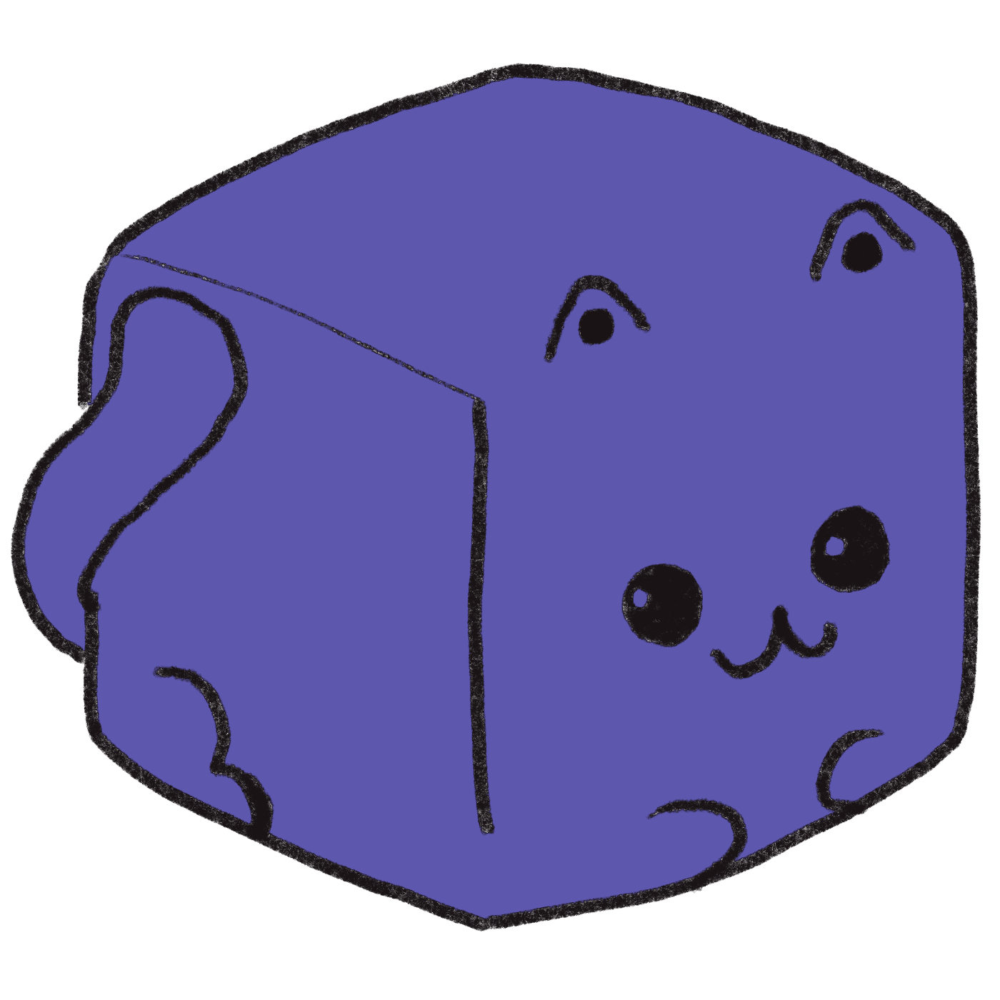
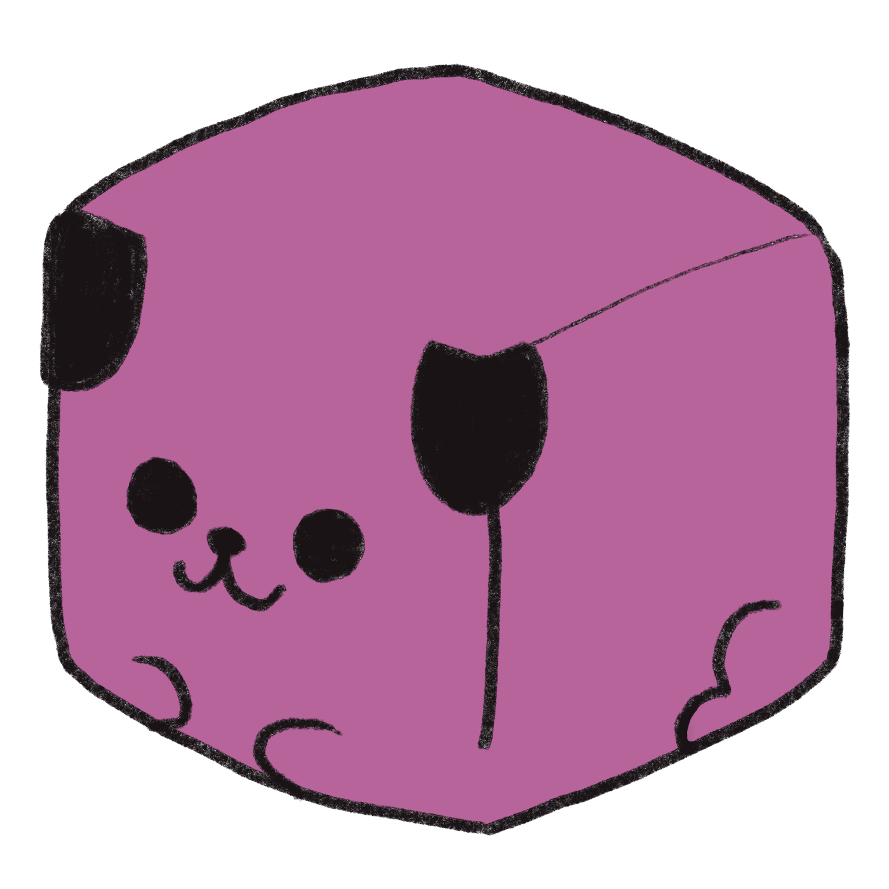
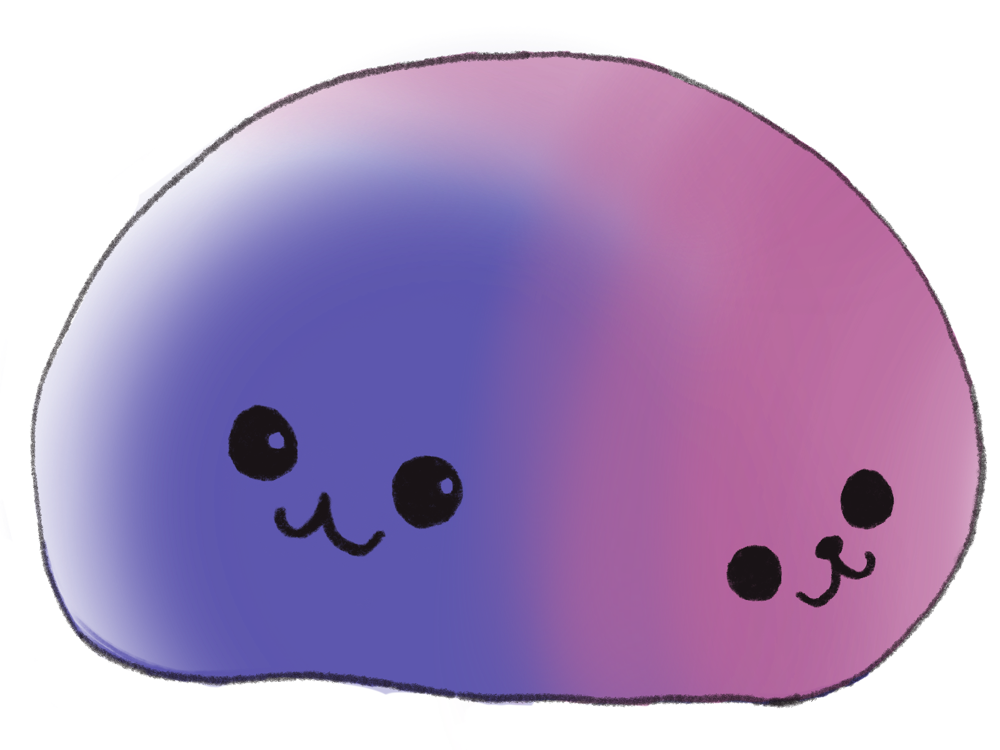
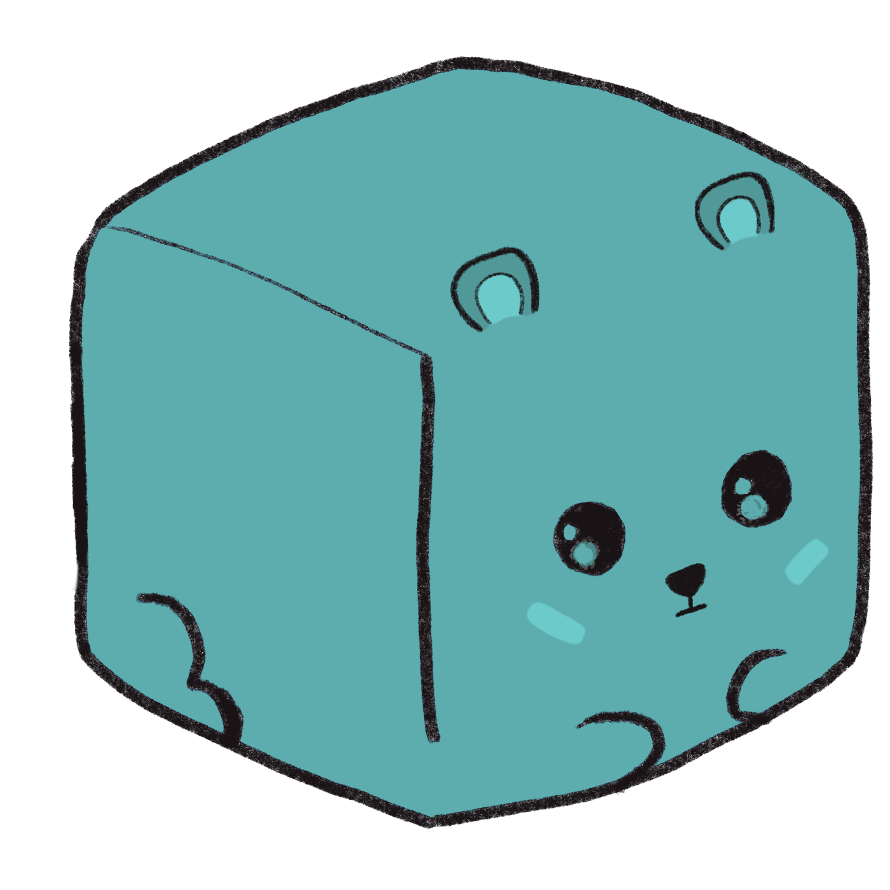

Neural Networks with Cube Cats
Neural Networks. They’re, uh, pretty pervasive by now, so you’ve probably heard of them, telling you which of your friends is in that picture, and that they know what you wanna text better than you do. But what do they know? Do they know things? Let’s find out!
So uh, it’s kinda important that we talk about discrete versus continuous things first, but I checked Wikipedia, and it just told me that discrete things are things that aren’t continuous. So far duh. But that’s not super helpful, so I guess I’ll have a crack at it.
Cubes and Blobs
Discrete things are neatly separated. You’ve got your cat cube over here, and your dog cube over there, and the two can meet, that’s fine, they’re friends after all, but they’re separate things.
 
Programmers are really good at telling computers how to solve problems that deal with discrete things. “Got three cat cubes, and you wanna have them in a line from big to small? Sure! Computer, just swap the bigger ones to one side ’til it looks right.”
Continuous things are all blobby… Imagine your cat cube and your dog cube melting together in an adorable blob of hug. It’s hard to tell where the cat part of the blob ends and the dog part of the blob starts. It’s just one massive blob of catdog.

When our cube pets melted, we lost something. We lost the distinction, the fact that cat cube and dog cube were two separate things, and we knew what was part of cube cat and what was part of cube dog. There’s bits of it where you’re like “Well, surely this bit is dog!”, but do you know exactly where to draw the line? That’s a very different kind of problem from what we had before!
Pictures of Cats, Dogs, and Non-Dogs
Let’s look at an example! You’ve got a bunch of pictures, and you wanna know if they’re pictures of cats, dogs, or of literally anything else. It’s one of these vague, blobby problems. If you wanna explain how to answer questions like “Is this a cat?”, you’re gonna have to explain what a cat is, and that’s surprisingly hard! That’s where neural networks come in! If you just show them enough pictures of cats, dogs, and non-dogs, they can learn what a cat is and isn’t!
How does that work?
First, what does a neural network even “see” when we show it a picture? Neural networks only “see” numbers. Specifically, they see a list of numbers with a fixed length, depending on how the network was designed. If we want to build a neural network which can look at cat pictures, we’re gonna have to find a way to turn a cat picture into a such list of numbers. There’s many different ways we can do that:
We could do a little bit of old-fashioned programming, take the pictures, manually tell the computer how to get certain features from them, and then show the neural network that list of features.
We can make all the pictures the same size, and take the redness, greenness, and blueness of all their pixels. For a picture with 100-by-100 pixels, that gives us 30.000 numbers! Whew, that’s a long list.
We can put a bunch of neural networks together! They see lists of numbers, but they also give their answers as lists of numbers, so we can take a whole lot of neural networks that can see tiny squares, and stack them together in a whole big pyramid, each layer looking at the outputs of the layer below it, until the base of the pyramid is big enough to look at the whole picture in one go!1
Let’s go with that first one, with the features, not ’cuz it’s the best, but ’cuz it is the easiest to understand. For instance, we know that all cube cats are purple, and all cube dogs are pink…
So, uh, if something is a picture of a cube cat, it’s probably gonna be mostly purple, right? And if something’s a picture of a cube dog, it’s probably gonna be mostly pink. We know how to do that! You just take the average redness, greenness, and blueness of all pixels in the picture! That’s just three numbers!
Three numbers. Hmm. That means you can think of every picture treated this way as a point in space. The space of all pictures, pictures of cats, dogs, and non-dogs! The neural network’s job is to draw a shape in that space, such that it captures all the pictures of cats, and none of the pictures of dogs, or non-dogs. That shape then captures what it truly means to be a cube cat! The quintessential shape of catness!
Drawing Shapes of Cats
Reality is a mess! In theory, we can just let the neural network settle on a nice shape for “cat”, and voilà, we’ve solved the problem… Unfortunately, in reality, there’s a ton of problems…
Making Lists of Numbers
We can’t just reduce our inputs down to three numbers without losing a lot of information. Actually, purple and pink have pretty similar greenness and blueness, so really, we’ve reduced our inputs down to just one relevant value… the amount of red! That means that our network thinks anything with low redness is a cube cat, and anything with high redness is a cube dog! What’s that? This picture of a cube bear’s cube cub? It’s a cat!

So, uh, clearly our neural network didn’t learn the essence of a what it means to be a cat. It just learned some simple way of telling cube cats and cube dogs apart, that happened to work for both cube pets we showed it. If we want it to learn something more general, we’re gonna have to use some way of turning pictures into lists of numbers which doesn’t lose as much of the information… which probably means we’re gonna need much more than just three numbers. That’s fine, though, that just means we’re drawing shapes in higher-dimensional spaces, with more than three dimensions, but the math for shapes and spaces still works… Let’s pretend we’re still talking about three dimensional space, though, ’cuz it’s so much easier to imagine.
Pebbles and Balloons
We’re gonna have to make sure to show our neural network many pictures of cats, dogs, and non-dogs! When the neural network is looking for the right shape in the space of cats, dogs, and non-dogs, it doesn’t get to see the entire space. All it gets to see is the points that we show it, by showing it sample pictures, and telling it whether that sample is a cat, a dog, or a non-dog. The whole “look for a shape” thing only works if the points we’ve got are a good representation of the quintessential shape of catness… If there even is such a thing…
Imagine our shape like a balloon… just, your average, round balloon. Inside of it are a bunch of unmovable pebbles, just floating there. Those are our cat pictures. If we deflate the balloon, it’s gonna get smaller – so far, so duh – but the cat pebbles won’t budge, so it’s gonna get stretched out over the cat pebbles. Outside of the balloon are a different bunch of unmovable pebbles: our dog pictures. If we inflate the balloon, it’s gonna get bigger, and get stuck on our dog pebbles. So, our collection of pebbles is gonna determine what shapes our balloon can take, and the more pebbles we have, the closer those shapes are gonna be to the quintessential shape of catness!
If we’ve got a whole bunch of pebbles, then there’s only gonna be a tiny bit of wiggle room for us to inflate or deflate the balloon, and whatever we do, it’s gonna be pretty much cat shaped… but if we have very few pebbles, then we’re just gonna get a round balloon, with so much space to move it around in, and so many bad options!2
What even is a cat?
The question “Is this a cat?” is inherently kinda vague. It’s impossible to give a definition that includes all things that are cats and excludes all things that are not cats. It’s more of an “I know one when I see one” kinda deal. However, if you showed humans a bunch of pictures of cats, dogs, and non-dogs, their answers probably agree in the vast majority of cases, but there’s always gonna be edge cases that humans disagree on… Is a cube cat a non-dog? (No.) Is a cube tiger a cube cat? (Prolly.) Is a cube wolf a cube dog? (Prolly not.) What if it’s a real good boy? (Okay, fine.) That means we’re only ever aiming for “most humans agree with this neural network, most of the time, and there aren’t and big surprises.” The thing you’d really rather not have, is where humans are like “this is a picture of a cat, one hundred percent sure, we all agree” and then the neural network is like “dog, for sure.”
Anyway, we’ve gone a long time without a picture of a cube pet, so to see you off, all our little cubey friends! Join us next time, when we talk about Hans, the cleverest little cube horse!